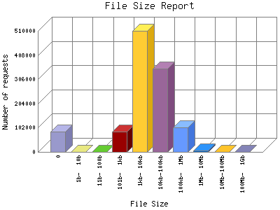

Analog 5.24
Analog 5.24 Report Magic for Analog 2.13
Report Magic for Analog 2.13The File Size Report categorizes the size of the file being requested. This can be useful in optimizing site performance. (Remember that on a 28.8Kps modem, it will take on average of 40 seconds to download 100Kb of data.)

| File Size | Number of requests in the last 7 days | Percentage of bytes transferred in the last 7 days | Number of requests | |
|---|---|---|---|---|
| 1. | 0 | 0 | 0% | 84,837 |
| 2. | 1b- 10b | 0 | 0% | 0 |
| 3. | 11b- 100b | 0 | 0% | 0 |
| 4. | 101b- 1kb | 0 | 0% | 85,122 |
| 5. | 1kb- 10kb | 0 | 0% | 509,907 |
| 6. | 10kb-100kb | 0 | 0% | 352,085 |
| 7. | 100kb- 1Mb | 0 | 0% | 104,639 |
| 8. | 1Mb- 10Mb | 0 | 0% | 4,584 |
| 9. | 10Mb-100Mb | 0 | 0% | 55 |
| 10. | 100Mb- 1Gb | 0 | 0% | 13 |
This report was generated on February 2, 2026 01:57.
Report time frame April 5, 2023 20:41 to May 9, 2023 10:03.
| Web statistics report produced by: | |
| Analog 5.24 | Report Magic for Analog 2.13 |